Some art requires
a place.
그래피티는 캔버스를 거리로 확장했습니다. 벽의 크기에 맞춰 몸을 움직이고,
건축물의 형태를 따라 그리며, 작업과 장소를 하나의 경험으로 연결합니다.
그래피티가 거리로 나간 이유는 단순히 더 큰 벽이 필요해서만은 아닙니다.
어디에 그렸는지까지 작품의 일부가 되기 때문이죠.
ARTI는 화면 안에 머물던 디지털 드로잉을 현실 공간으로 확장하는 XR 기반 공간 드로잉 서비스입니다. 그래피티가 가진 신체적 움직임과 장소성을
가져오되, 실제 표면을 훼손하지 않고 자유롭게 표현할 수 있습니다.
이제 원하는 공간을 나만의 캔버스로 바꾸고, 새로운 흔적을 남겨보세요!
그래피티는 캔버스를 거리로 확장했습니다. 벽의 크기에 맞춰 몸을 움직이고,
건축물의 형태를 따라 그리며, 작업과 장소를 하나의 경험으로 연결합니다.
그래피티가 거리로 나간 이유는 단순히 더 큰 벽이 필요해서만은 아닙니다.
어디에 그렸는지까지 작품의 일부가 되기 때문이죠.
4,600건+
29곳
하지만 실제 공간에 흔적을 남기는 행위에는 한계가 있습니다. 공공시설과 타인의 소유물
위에 이루어지는 작업은 훼손과점유라는 문제를 피하기 어렵죠. 공간을 캔버스로 사용하는
강한 경험은 매력적이지만, 그 경험을 위해 반드시 실제 표면을 바꿔야 할 필요는 없습니다.
ARTI는 디지털 드로잉의 자유로움과 그래피티의 공간적 행위감 사이에
존재합니다. 현실 공간을 스캔하고, 전용 펜과 크레들로 실제 표면의 형태와
깊이를 따라 그림을 그릴 수 있죠. 그린 그림은 물리적 표면을 바꾸지 않은 채 그
장소에 디지털 흔적으로 남습니다. 현실 공간이 아닌, 제 3의 공간에서 말이죠.
ARTI는 MR glasses, Side pen, Cradle 세 가지 디바이스로 이루어집니다. 각각의
도구는 별도의 메뉴를 거치지 않고, 사용자가 직접 꺼내고 드는 행동에 따라 다른 드로잉
방식을 활성화합니다. 펜을 꺼내면 섬세한 스케치가, Cradle을 들면 큰 몸짓을 사용하는
그래피티가 시작됩니다. 도구를 선택하는 행동 자체가 인터페이스가 되는 것이죠.
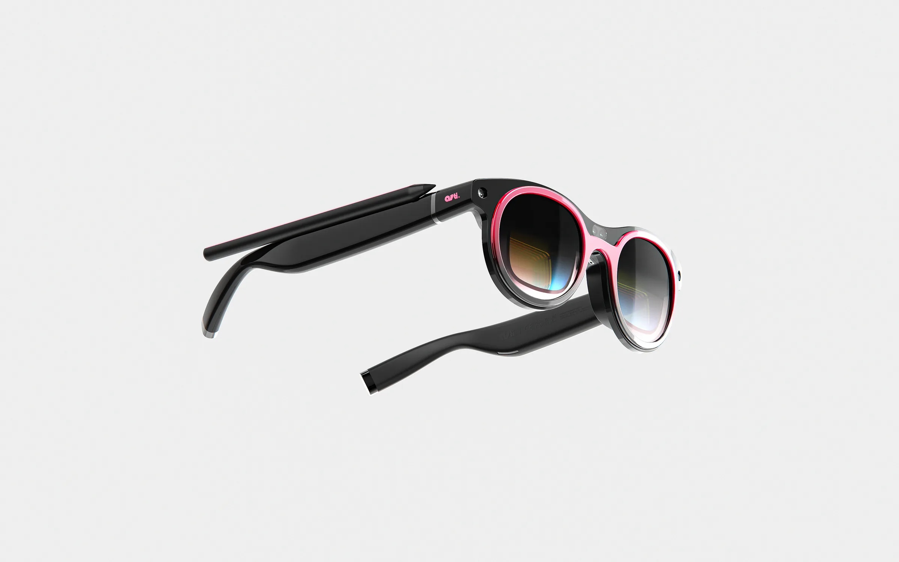
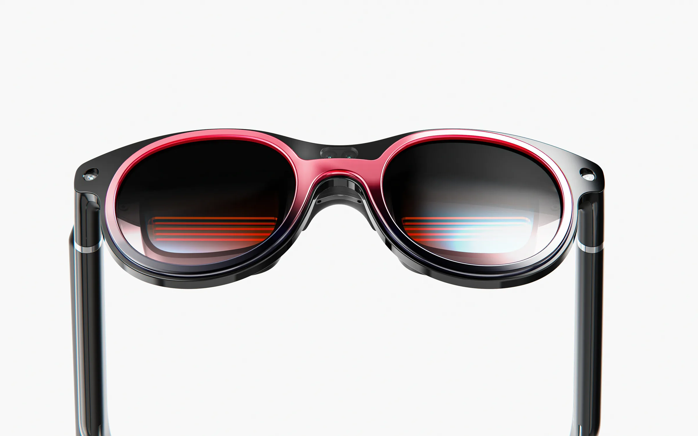
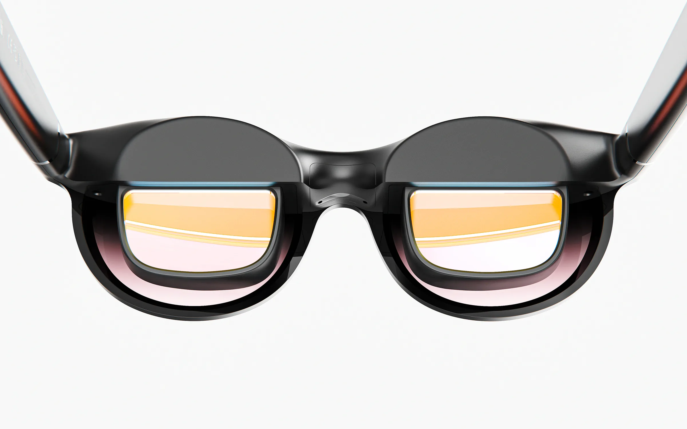
현실 공간을 ARTI의 캔버스로 바꾸는 MR 글래스입니다. 눈앞의 벽과 오브젝트를 스캔해 3D Surface로 만들어,
그 위에 작업물을 띄웁니다. 그림이 남는 장소와 작업자의 시선이 같은 곳에 있어, 공간을 보는 것만으로 스케치가
시작됩니다.
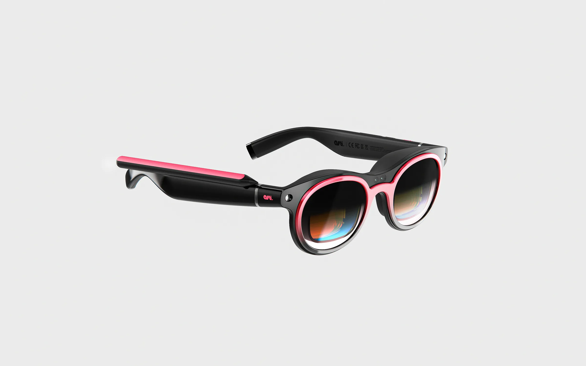
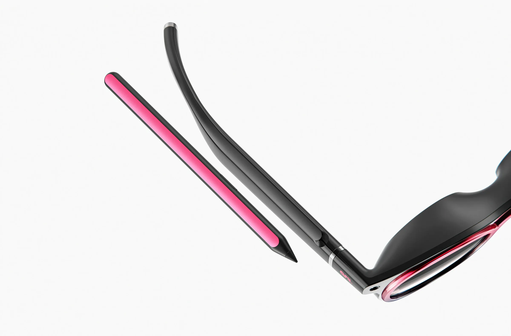
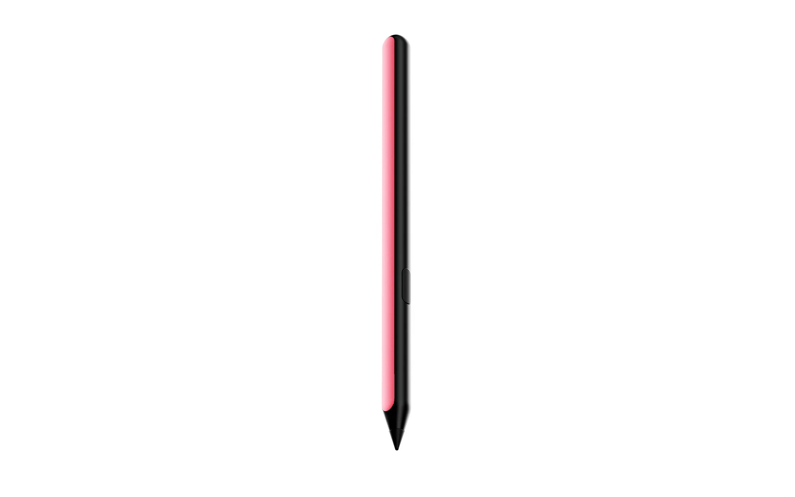
크레들에 수납되어 있던 펜을 꺼내면 스케치 모드가 시작됩니다. 펜과 표면 사이의 거리, 기울기, 손의 속도가 선에
그대로 반영되어 밑그림부터 섬세한 라인까지 손의 감각으로 그릴 수 있습니다. 잠시 멈추고 싶을 땐 펜을 글래스
템플 위에 얹어두세요. 얹는 순간 Pause가 되고, 다시 집으면 이어서 그릴 수 있습니다.
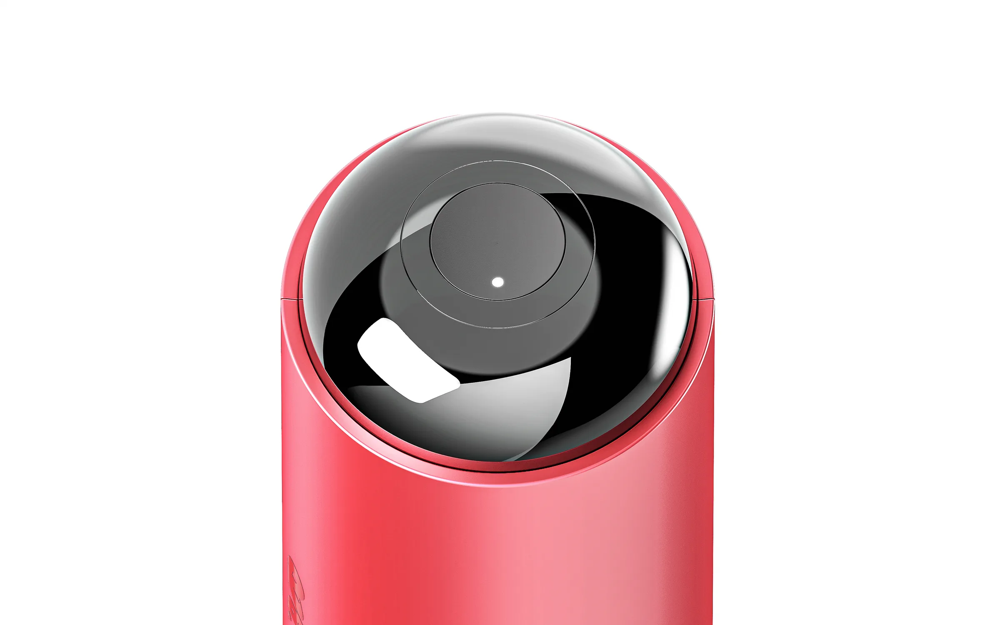
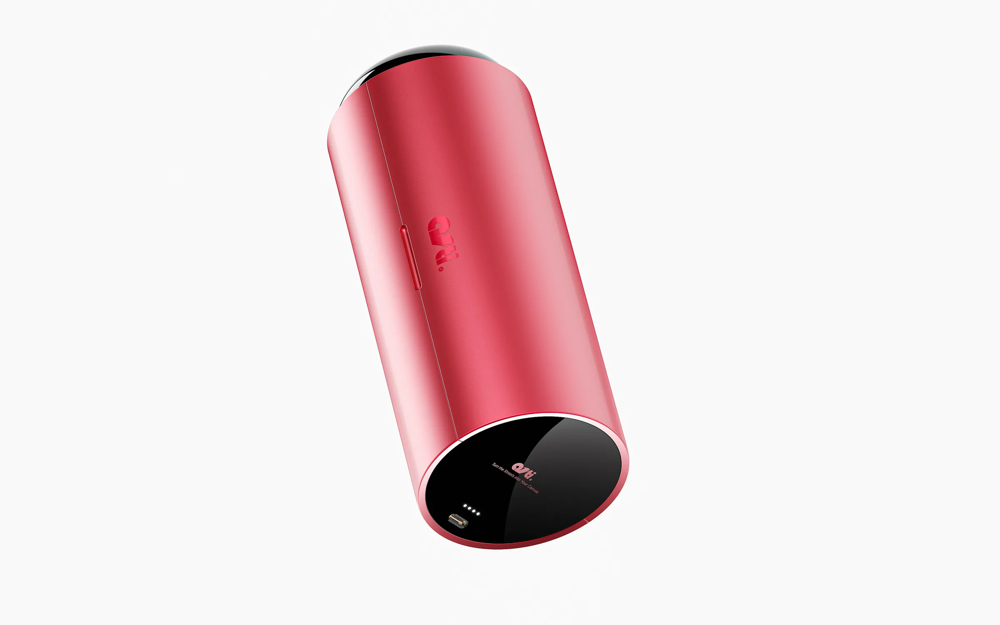
평소에는 글래스를 보관하고 충전하는 케이스이지만, 손에 쥐고 흔드는 순간 Spray 도구로 바뀝니다. 흔드는 세기에 따라 분사 강도가 달라지고, 한 곳에 오래 머물면 페인트가 흘러내립니다. 실제 스프레이 캔을 쥔 것처럼 큰 몸짓으로 컬러링을 마무리합니다.
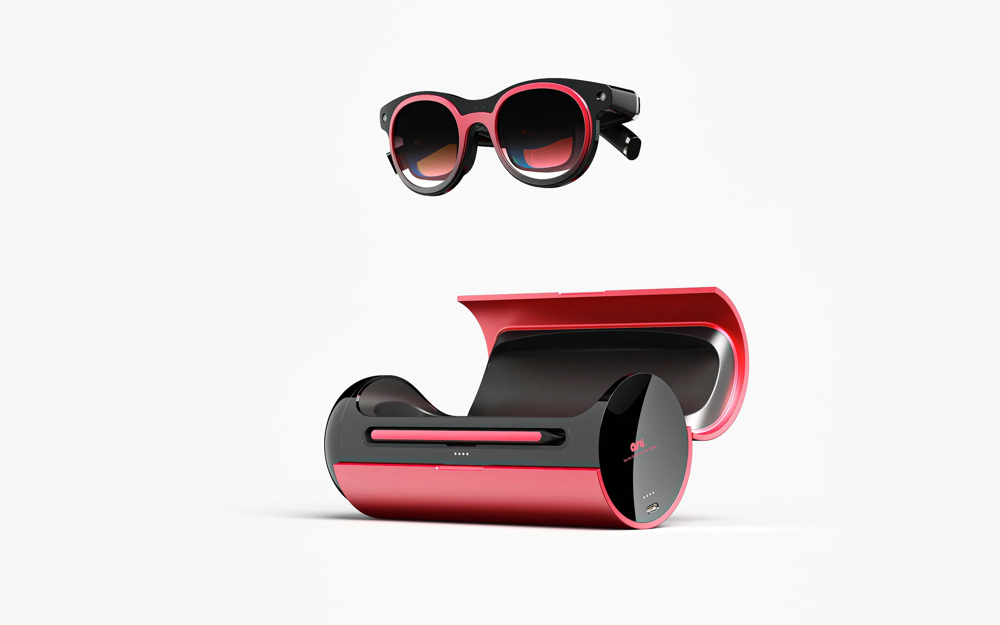
글래스, 펜, 크레들은 따로 쓰는 세 개의 기기가 아니라 하나로 이어진 도구입니다. 펜은 글래스에 꽂혀 있고, 글래스는 크레들에 담겨 있어서, 꺼내는 행동 하나가 곧 모드가 됩니다. 펜을 꺼내어 Sketch를, 사용하던 펜을 템플에 PAUSE시킨 뒤, 크레들을 흔들어 그래피티가 시작되고, 사용하던 글래스를 다시 수납하면 하나로 돌아갑니다. 세 도구가 연속되어, 별도의 메뉴얼 없이 행위의 연속으로 예술 활동이 이어집니다.
그림을 그리고 싶은 오브젝트를 발견하면, 글래스 상단의 버튼을 눌러 스캔을 시작합니다.
화면의 안내에 따라 오브젝트의 정면, 측면, 후면을 차례로 촬영하면 여러 방향에서 수집된 형태
정보가 하나의 3D 오브젝트로 변환됩니다. 사용자는 별도의 3D 모델링 과정 없이, 눈앞의 사물이나 구조물을 바로 디지털 캔버스로 가져올 수 있습니다.
스캔이 완료되면 오브젝트 주변에 3D Bounding Box가 생성됩니다. 각 포인트를 직접 조절해
크기와 범위를 정하고, 실제 오브젝트를 그대로 사용하거나 더 크게 확장해 원하는 비율의 캔버스로 만들 수 있습니다.
글래스에 꽂힌 펜을 꺼내면 스케치 모드가 바로 활성화되고, 컬러와 브러시 크기 등을 조절할 수 있는 스케치 패널이 나타납니다. 작업에 집중하고 싶을 때는 패널을 간단한 형태로 줄여, 필요한 기능만 남긴 채 계속 그릴 수 있습니다.
스케치가 완료되었다면 이제 본격적으로 컬러링을 진행해 볼까요?
평소에는 글래스를 보관하는 크레들이지만, 세로로 고쳐 쥐는 순간 스프레이 도구로 전환
됩니다. 별도의 모드 선택 없이 바로 컬러링을 시작할 수 있으며, 실제 스프레이처럼 크레들을
흔들수록 분사 강도가 높아집니다.
스프레이 패널에서는 컬러와 분사 범위, 노즐 타입을 조절할 수 있습니다. 표현하고 싶은
질감에 따라 노즐을 바꾸고, 필요할 때는 패널을 간단한 형태로 줄여 작업에 필요한 기능만
남길 수 있습니다.
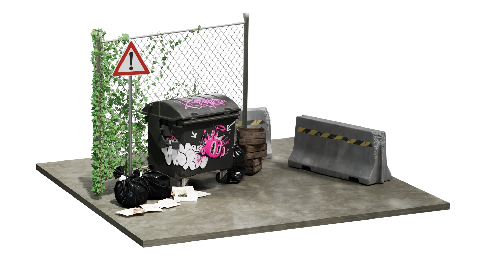
ARTI는 벽 하나에서 시작하지만, 핵심은 공간을 캔버스로 바꾸는 구조에 있습니다.
어떤 공간이든 스캔하면 그림이 되고, 그 위에 쌓인 흔적은 다음 사람의 시작이 됩니다.
이제, 당신의 벽을 찾아보세요!
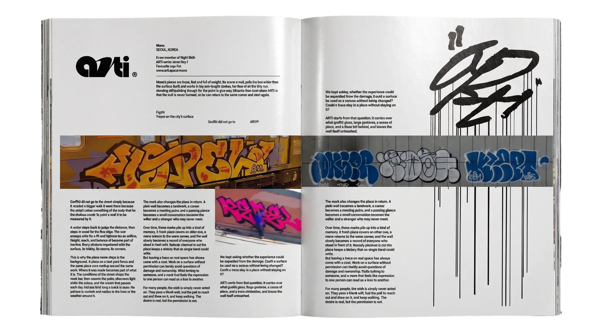